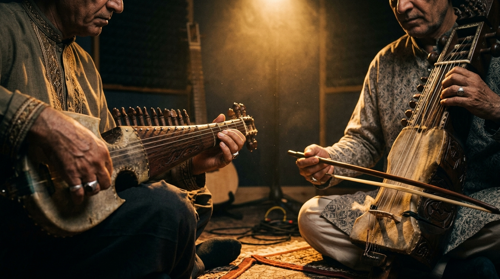
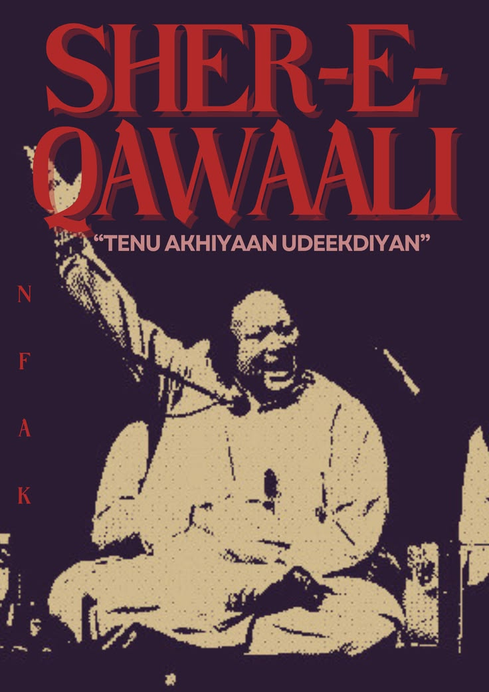
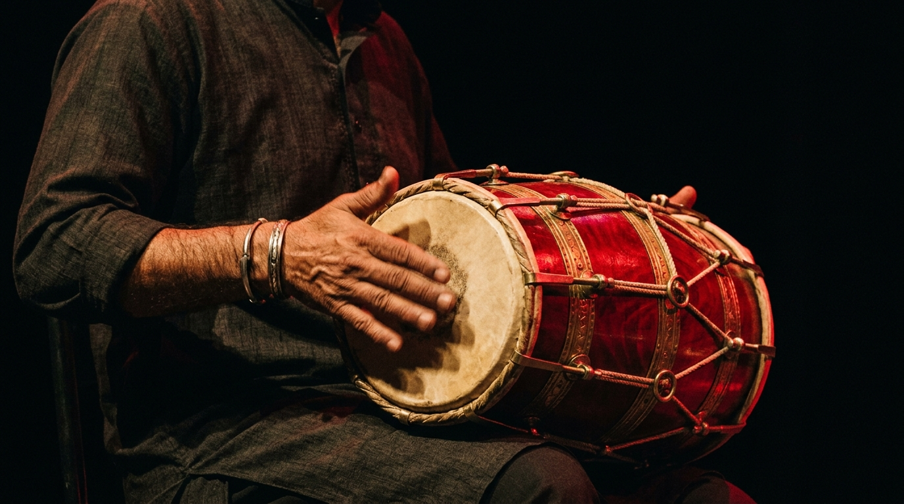
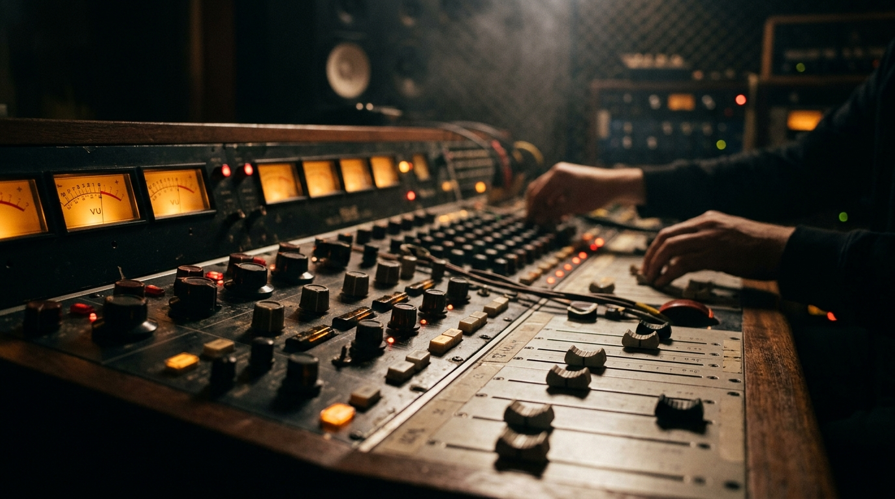

View and subscriber counts verified against YouTube public analytics, October 2026. Figures rise daily.
01 · The Hall of Fame
Anthems that
broke the internet
Four performances that transcended television. Tap any card to watch the original studio recording and see its live, verified view count.
02 · The Legacy
Keepers of the sound
03 · The Room
Before the song,
there is listening.
A visual study of the space around a live take: the voice, the hands, and the room that lets both be heard.


Interpretive imagery via Unsplash. These are atmosphere studies, not official Coke Studio stills.
04 · The Catalog
More immortals
A living archive. Each title opens its authentic studio recording on YouTube.

Featured artwork
Sher-e-Qawaali
“Tenu Akhiyaan Udeekdiyan” · after Nusrat Fateh Ali Khan
Before Afreen Afreen paid homage to his era, before Rahat carried the family voice onto the studio floor, there was the Sher-e-Qawaali himself. The Lion of Qawwali casts the longest shadow over every season of Coke Studio: a poster for the king whose note built the house.
05 · Studio Archive
The craft in stills
Beyond the broadcast: the tangible heritage of live take audio, regional artisans, and handcrafted instruments that define the Coke Studio sound.

